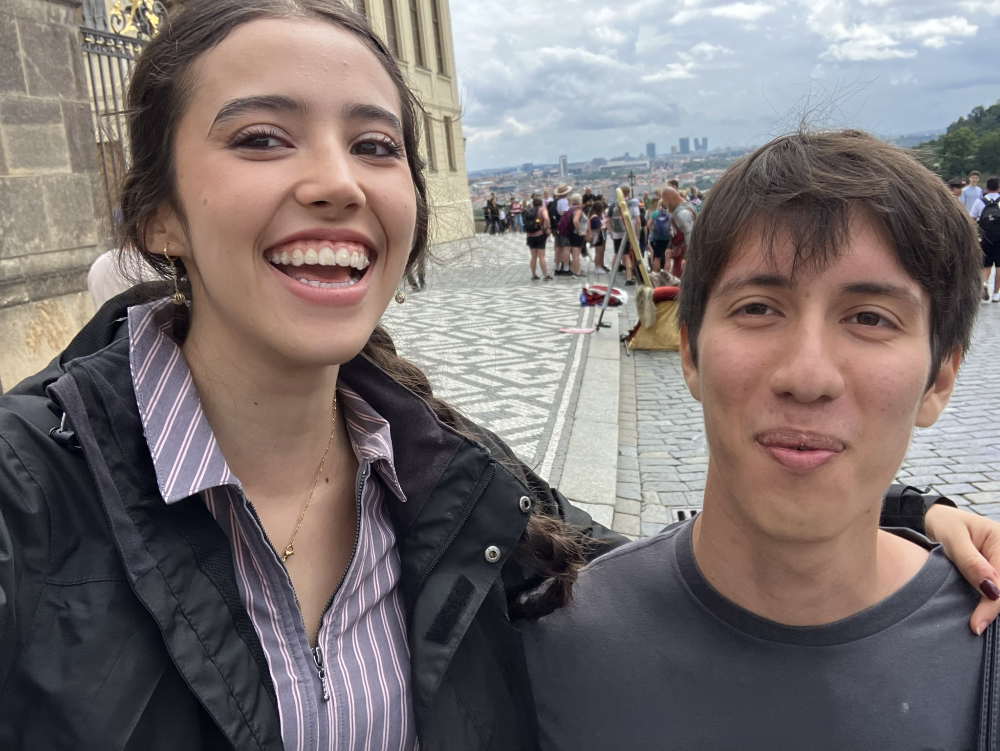
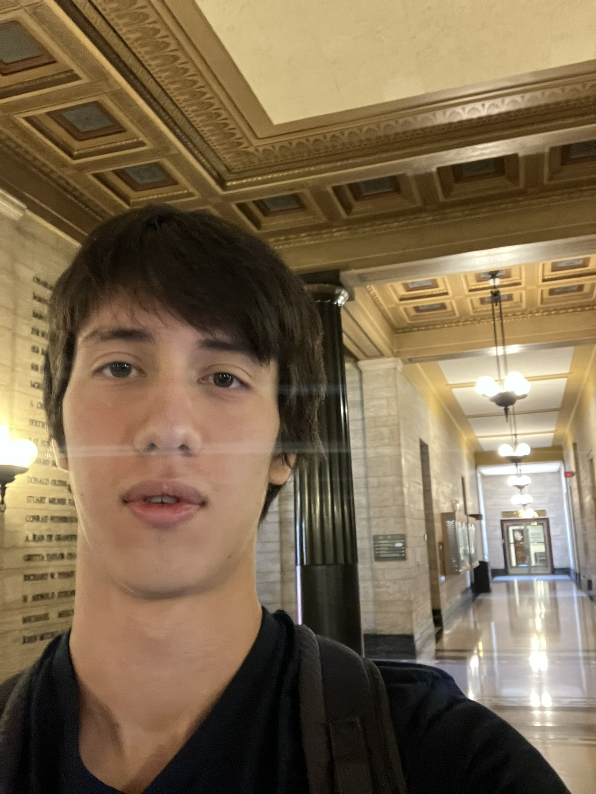
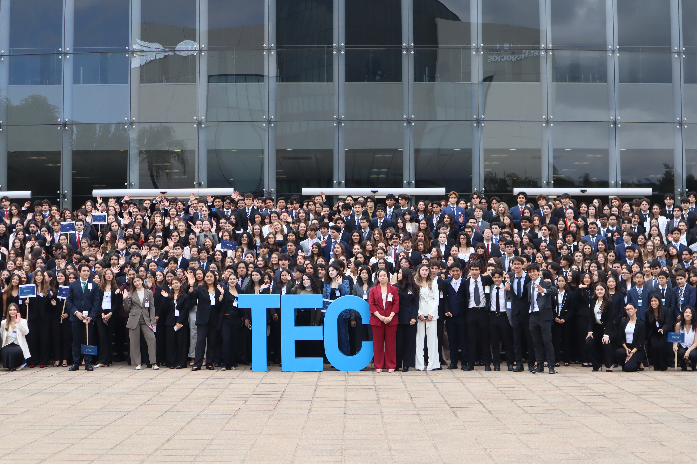
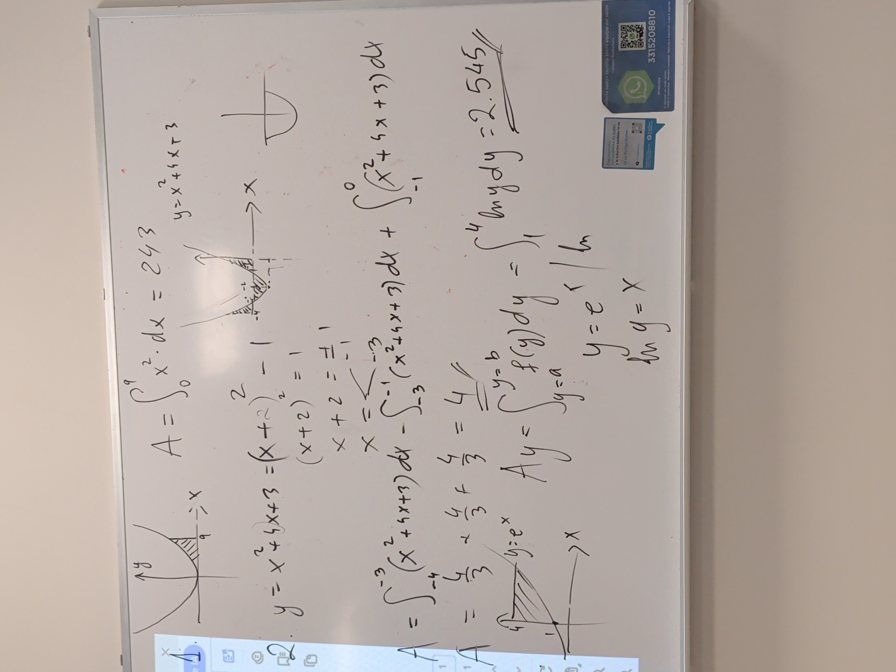
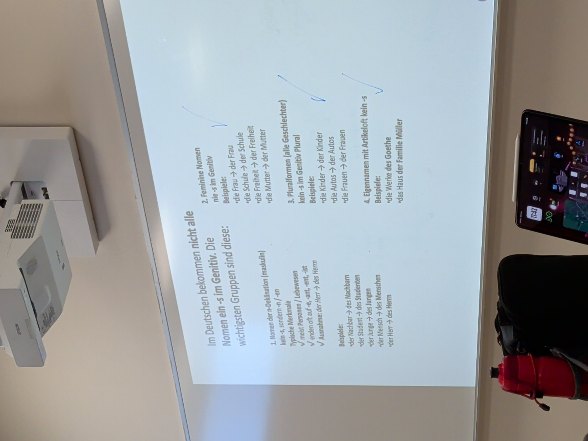

01

Heidelberg Alemania
Viaje internacional a Alemania con Prepa Tec. Experiencias en Heidelberg: cultura, idioma, convivencia con compañeros y aprendizajes que marcaron mi perspectiva global.
InternacionalMi Viaje en Prepa Tec
Para mí, Momentum representa más que un simple impulso; es la fuerza que me ha llevado a través de cada experiencia, cada desafío y cada triunfo en mi camino por Prepa Tec. Es el reflejo de mi crecimiento, mis aprendizajes y las conexiones que he creado.

Desde mis inicios hasta Prepa Tec
Cuando apenas tenia 1 año y medio ya me paraba, pero no caminaba, corria de un lado a otro porque temia caerme.
En mi infancia mis pasiones eran, leer(leia casi todas las tardes despues de clase) extracurriculares de atletismo, gimnasia olimpica, escalada y clases de natación.
En general siempre fui un niño muy calmado, y siempre entusiasta por lo que me interesaba.
 Primera infancia
Primera infancia
 Secundaria
Secundaria
Mis mejores experiencias en Prepa Tec

Viaje internacional a Alemania con Prepa Tec. Experiencias en Heidelberg: cultura, idioma, convivencia con compañeros y aprendizajes que marcaron mi perspectiva global.
Internacional
Experiencia en Montreal: intercambio, idioma y vida en Canadá. Momentos que recordaré con amigos y lo que aprendí fuera del aula.
Internacional
Ser Subsecretario General en MUN 2026: organización, liderazgo y trabajo en equipo. Una oportunidad de dirigir y aprender de la experiencia de un Model United Nations.
Liderazgo
Representar a la delegación de China en MUN 2025: investigación, debate y negociación. Lo que preparé, lo que viví en el comité y lo que me llevé de la experiencia.
Académico
Participación en la Feria de Ciencias 2025: el proyecto que presenté, el proceso de investigación y el resultado. Lo que aprendí y lo que significó para mí.
AcadémicoBlueCarpet en sus dos ediciones: el evento, la preparación y la experiencia con compañeros. Por qué este momento quedó entre mis favoritos de Prepa Tec.
Cultura
La carrera de botargas: diversión, trabajo en equipo y el ambiente del evento. Anécdotas de ese día y por qué lo recuerdo con gusto.
Cultura
Día Pi en Prepa Tec: actividades, matemáticas y convivencia. Cómo se celebró y qué hizo especial este día para mí.
Académico
La posada “más por los demás” con GE-preve: servicio, comunidad y espíritu navideño. Lo que hicimos y lo que significó participar en esta actividad.
Liderazgo
Feria de Humanidades 2023: el proyecto o participación que tuve, lo que aprendí y cómo viví el evento. Un momento importante de mis primeros años en Prepa Tec.
AcadémicoCinco momentos que me pusieron a prueba


Enfrentar AP Cálculo: el nivel de exigencia, las horas de estudio y cómo logré entender los conceptos. Lo que más me costó y lo que me dejó a nivel académico.
Mi primera experiencia internacional en Canadá: salir de mi zona de confort, el idioma, la distancia y la adaptación. Lo que me costó y lo que gané en autonomía y perspectiva.
Asumir el rol de Subsecretario General en el MUN: la responsabilidad de organizar, guiar a otros y tomar decisiones. Los obstáculos y lo que aprendí sobre liderazgo y trabajo bajo presión.
Alemán avanzado: genitivo, dativo, declinaciones y la curva de aprendizaje. Cómo lo fui superando con práctica y qué estrategias me funcionaron.
Adaptarme al modelo Tec al entrar: el ritmo, la autonomía, las expectativas y el cambio respecto a antes. Los primeros meses y cómo poco a poco encontré mi forma de trabajar.